Overview
In‑Line Flow‑Cell Photometer
A subsystem of the ReLEAF bioreactor.
The In‑Line Flow‑Cell Photometer is the optical‑density monitoring subsystem of the bioreactor. It reads the lumen loop of the hollow‑fiber membrane continuously, so the culture’s density is known without opening the loop or withdrawing a sample. A 600 nm LED shines through a 2 mm flow cuvette; a nominal 90:10 beam splitter sends a tenth of the beam to a reference sensor before the sample, and OD600 comes from the ratio of the two sensors, so each reading is normalized against the LED’s own output.
In‑line reading matters because B. subtilis grows at ambient temperature, and a bioreactor on a farm cannot hold its temperature precisely. The culture’s density in real time is how we judge the reactor’s yield and when to harvest. Manual sampling cannot do this: each sample opens the loop, risks contamination and gives one point hours apart.
Development began with the characteristics of Bacillus subtilis and its growth curve in the bioreactor, since the instrument has to resolve that curve.
Every run on this page used B. subtilis 168: the growth cycles of part 2, the photometer cycles of part 3 and the 434‑hour run of 5.1. The project did not stay on that strain. From the bioreactor’s second integrated run, in October, the chassis is the protease‑deficient B. subtilis WB800, which the photometer reads in the same way (bioreactor, 2.2).
Bacterial Growth
DBTL 1 of 2
2.1 DBTL 1 – B. subtilis 168 Growth through the Hollow‑Fiber Membrane, 22 °C
Prototypes I‑0606 and I‑0610 · 6–10 June 2026
Design
We chose B. subtilis as the chassis because it is practical to clone, grows at ambient temperature and secretes proteins into its medium, so the protectant can be collected without lysing cells. B. subtilis 168 also has compromised motility and weak biofilm formation, which suits a contained loop.
The objective of this cycle was a functional continuous‑flow system using a PES hollow‑fiber membrane, to confirm that the loop circulates and that the culture grows in it before any optical hardware was added.
Within this first cycle, we used a PES hollow‑fiber protein membrane (lumen volume ~200 mL, surface area about 1.3 m²) connected to a 500 mL LB medium reservoir containing 300 mL of LB medium, inoculated with 20 mL (1:15) of a multi‑overnight B. subtilis liquid culture. The shell side was closed by a silicone tube joining its two outlets. For each OD600 reading, broth was drawn by syringe from the sampling Luer valve and measured on a BioDrop spectrophotometer. As a control, an identical culture of the same volume grew in a 500 mL conical flask at 37 °C and 200 rpm.
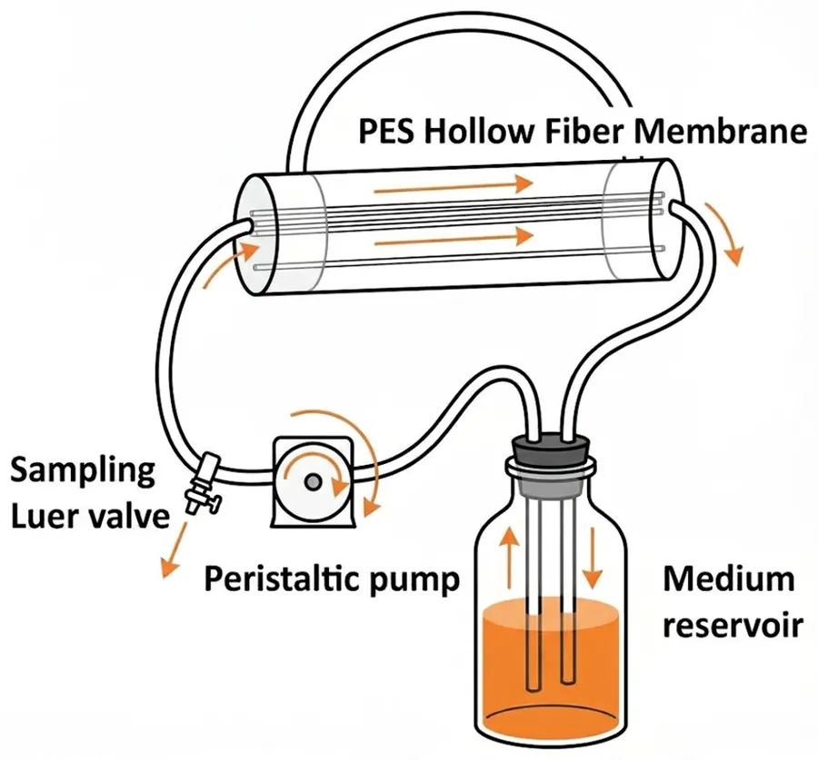
Build
After the leak in the first run (prototype I‑0606, below), we moved to a pump with more durable tubing. This single change keeps the comparison with the previous run interpretable.
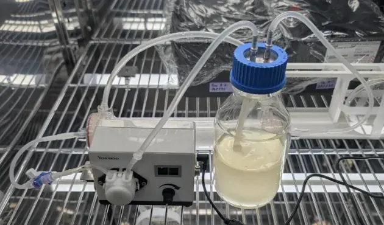
Test
The peristaltic pump reached the target flow rate of 94 mL/min, but the trial ended early because of localized medium leakage at the pump tubing.
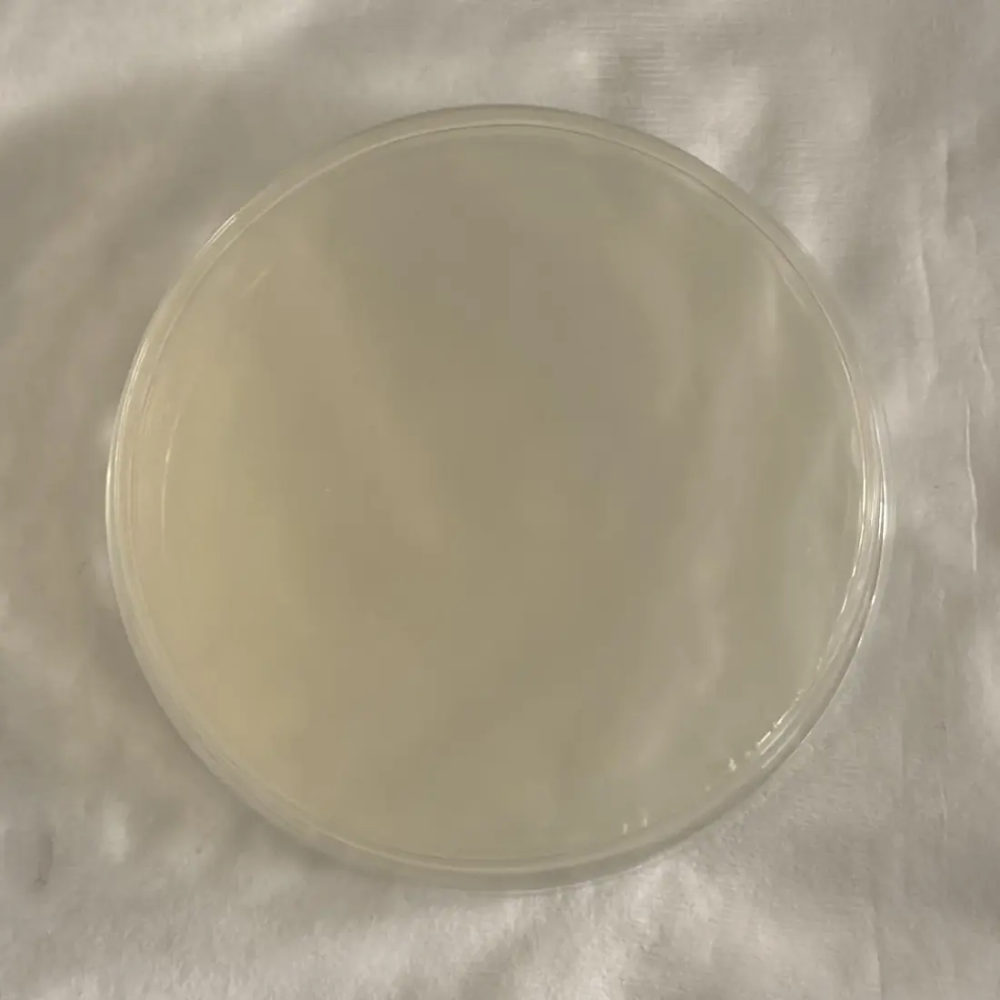
With the new pump the test ran 27 hours before that pump also failed: its tubing could not withstand driving the flow through the hollow‑fiber membrane for that long. The bioreactor culture barely grew at 22 °C while the flask control, shaken at 37 °C, climbed to an OD600 close to 2.5; the medium reservoir never rose above 0.5. The low readings from the bioreactor were therefore not an artifact of the failing pump.
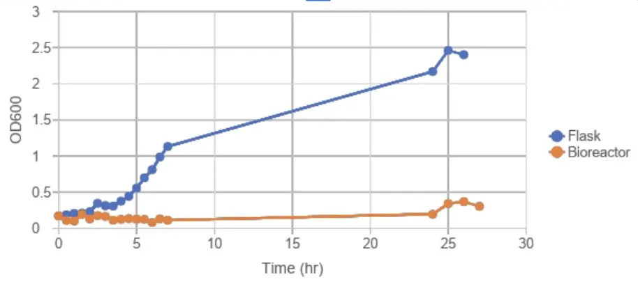
Learn
The gap between the tube’s and the reservoir’s final OD600 (0.304 against 0.48) suggests that, without mixing, in‑line sampling underestimated the culture. We attribute the gap and the low growth to the lack of active mixing, which allows nutrient stratification and cell sedimentation in the reservoir. The leakage pointed to biocompatible (BPT) tubing for durability and a more stable seal at the pump.
Through these tests we were able to catch a problem with the culturing of our B. subtilis 168 strain early, which told us that homogeneity and stirring are imperative before the long BPT run.
DBTL 2 of 2
2.2 DBTL 2 – B. subtilis 168 Growth through the Hollow‑Fiber Membrane, 37 °C
Prototype II‑0614 · 14 June 2026
Design
The BPT tubing we had ordered was delayed, so this cycle ran at 37 °C to shorten the experiment and validate the growth curve of B. subtilis 168 in the loop.
Improving on the previous design, a 200 rpm magnetic stirrer was added to the medium reservoir to prevent sedimentation and ensure a homogeneous nutrient distribution, so that our bacteria consume nutrients more evenly. In addition, the sampling sector was placed closer to the medium reservoir to acquire a more accurate measurement: the reservoir holds much more of the volume than the hollow‑fiber membrane, which gives us a more averaged prediction of the total OD of the entire bioreactor module (the illustration).
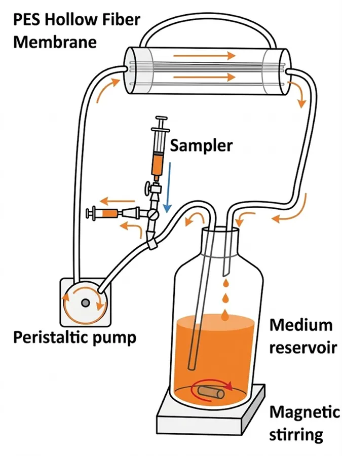
To keep sampling from contaminating the loop, we built an aseptic sampling port from a three‑way Luer valve, a one‑way check valve and a 0.22 µm hydrophobic PTFE membrane filter (drawing). A sterile syringe draws broth through the check valve, which prevents backflow. After each sample, an empty syringe pushes sterile air through the 0.22 µm filter to clear the sampling line.
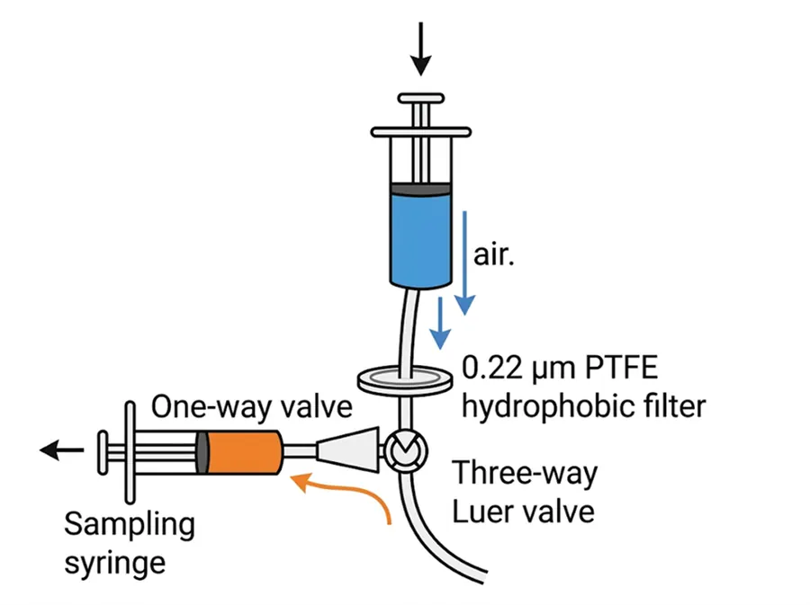
Build
This cycle changed more than the pump. A stir bar was added to the medium reservoir flask on a magnetic stir plate, for homogeneity between the sampling region and the reservoir’s inlets and outlets, and the sampling point was moved closer to the mixed volume, which gave more consistent readings. The whole loop was placed in an incubator at 37 °C.
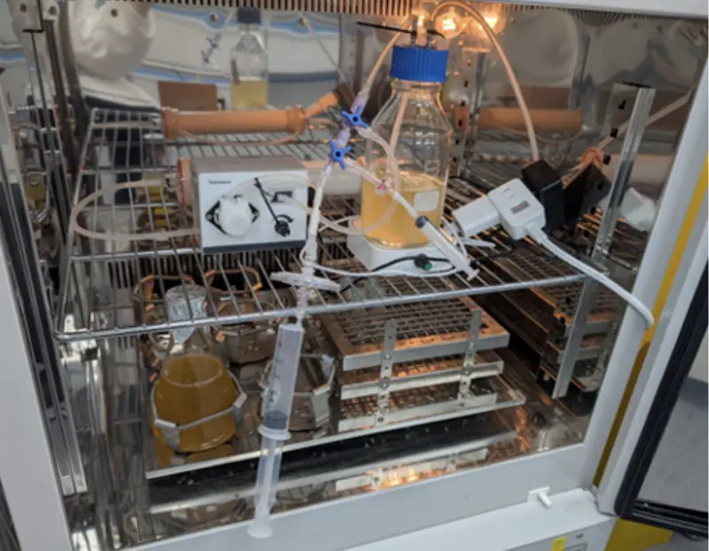
Test
The peristaltic pump held 94 mL/min for the whole test. The bioreactor and the flask control ran at 37 °C rather than room temperature, and both reached a full growth curve.
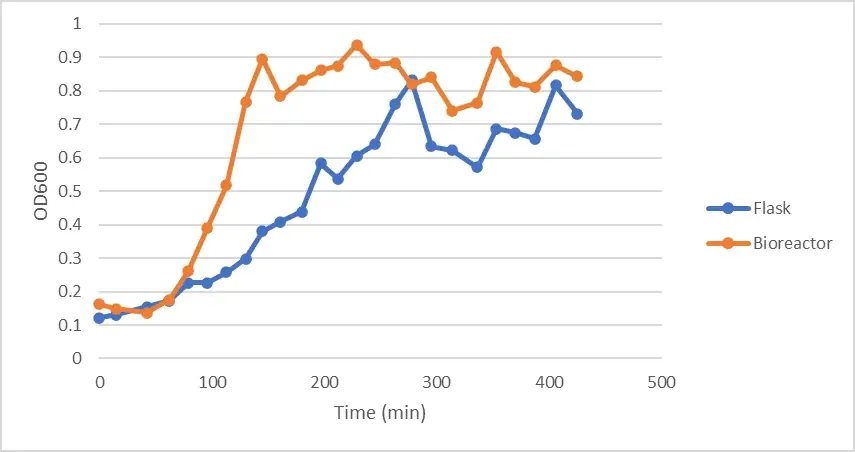
Learn
Stirring at 37 °C gave a full growth curve. The run does not isolate stirring: the stirrer, the temperature (22 to 37 °C) and the sampler’s position all changed between DBTL 1 and this cycle. We kept the stirrer, since it addresses the sedimentation DBTL 1 pointed to. The next cycle evaluates growth kinetics at 22 °C, and higher‑durability BPT tubing is still needed to prevent the tube degradation seen in earlier trials.
Engineering the Pro Photometer
DBTL cycle 1 of 4
3.1 DBTL Cycle 1 – Pro In‑Line Photometer Light Path
Before anything was printed
Design
Before anything was printed we had to establish where each optical component belongs. The components were held on the bench in magnetic soldering clamps, which allow each one to be moved along the optical axis and locked in place.
Build
We fixed the LED, slit, beam splitter and both lux sensors relative to each other and left only the paralleling lens free to move, so that lens position was the only variable.
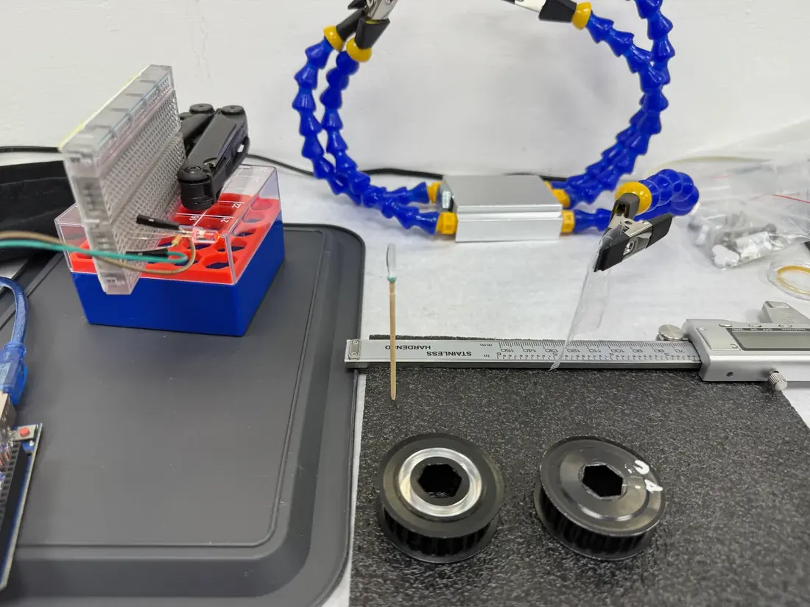
Test
With the other components fixed, we moved the paralleling lens along the axis until the beam illuminated both sensors steadily, and recorded that position.
Learn
We measured three spacings: the tip of the LED to the paralleling lens, the lens to the center of the beam splitter, and the center of the beam splitter to each sensor. The measured spacings became the fixed geometry for every build after this one.
LED tip to lens
5.5 cm
Lens to beam‑splitter center
10 cm
Beam‑splitter center to each sensor
2 cm
DBTL cycle 2 of 4
3.2 DBTL Cycle 2 – Pro In‑Line Photometer V1
Horizontal, on a printed rail · 2 July 2026
Design
V1 turns the bench layout into a self‑contained instrument that sits in the loop. Two decisions shaped it: the light path stays flat and horizontal, and each component sits on an independently adjustable mount so the bench distances can be reproduced and corrected.
Build
The whole optical train mounts on a single printed rail. Each component sits on the rail and slides along it, set by hand against the distances from cycle 1. The flow cuvette is plumbed into the recirculating loop with tubing at both ends, so the instrument reads the culture as it passes through.
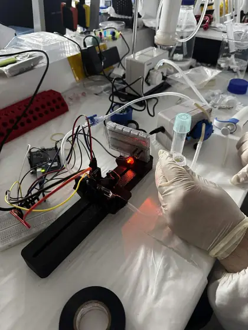
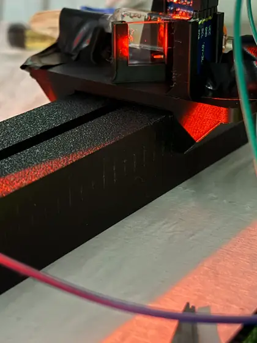
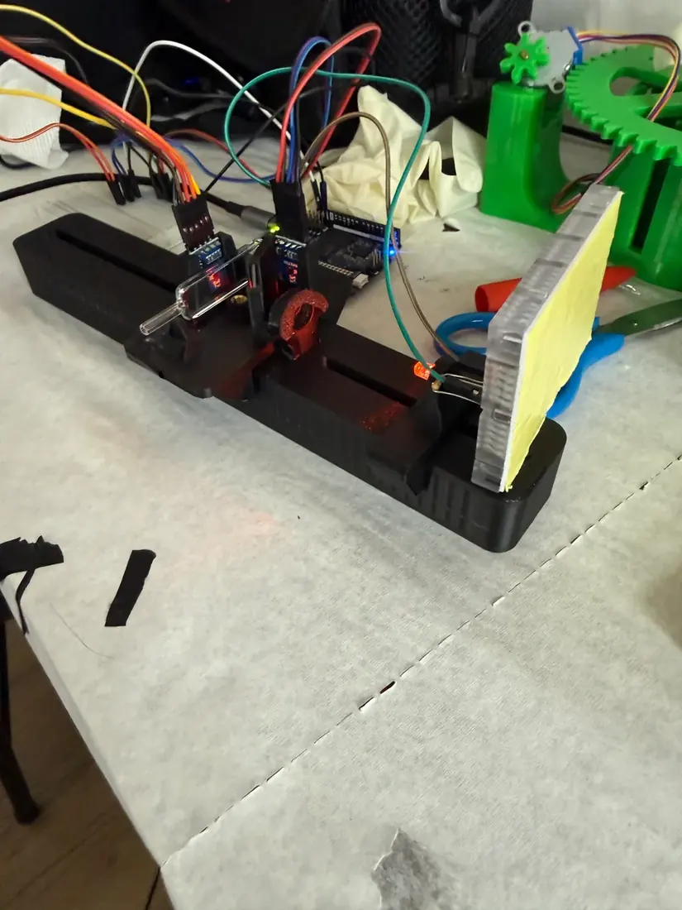
Test
The data fluctuated far too drastically, because of bubbling within the flow cuvette as well as the loose tolerances of the lens and beam‑splitter mounts.
Learn
Bubbles in the flow cuvette sat directly in the beam. With a horizontal path a bubble has no route out: it stays in the light until the flow happens to dislodge it.
The adjustable mounts were also too loose. The lens and beam splitter could drift between runs, so the geometry measured in cycle 1 was not held.
Both point the same direction. Stand the light path up so bubbles rise out of it, and tighten the component tolerances.
DBTL cycle 3 of 4
3.3 DBTL Cycle 3 – Pro In‑Line Photometer V2
The light path stood up · 4 July 2026
Design
V2 stands the light path up. The LED fires upward through the flow cuvette, so a bubble rises along the beam axis and leaves the light instead of settling in it.
Build
A wide square base plate was printed with a mounting adapter for the rail, so the assembly stands rigidly on the bench with the optical axis vertical. The component seats were tightened so the lens and splitter hold their measured positions.
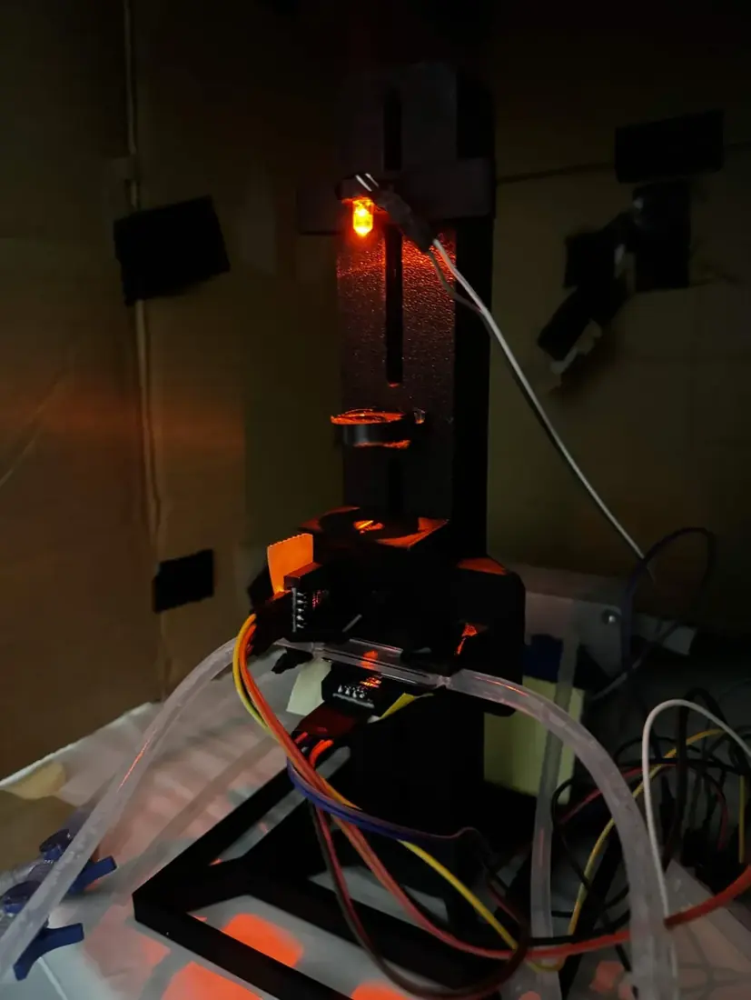
Test
Two samples were run through V2 and compared against the BioDrop. The instrument was zeroed on the growth medium, so medium reads 0 by definition.
| Sample | Sample sensor (lx) | Reference sensor (lx) | OD, as logged | BioDrop |
|---|---|---|---|---|
| Growth medium (blank) | 660 | 92.5 | 0 | — |
| 2 mL TiO2 suspension | 495 | 92.5 | 62.5 | 0.75 |
The firmware of the time divided the absorbance, 0.125, by the cuvette path entered in meters (0.002 m), so it logged 62.5. On the standard 1 cm path the firmware uses now (8.2), the same reading is 0.62, against the BioDrop’s 0.75 for the same sample (notebook, week 18).
The reference channel held at 92.5 lx across both readings. That tells us the source was stable between measurements, so the drop on the sample channel came from the sample and not from the LED.
Learn
The optics were not the main problem. Our calibration procedure was.
We had blanked our photometer against growth medium, while the BioDrop is calibrated on distilled water, so the two instruments reported absorbance relative to different baselines.
This is the origin of our blanking rule: both instruments are blanked on the same baseline, clear water, so our zero matches the instrument we validate against.
DBTL cycle 4 of 4
3.4 DBTL Cycle 4 – Angled Stand
A tilt in a wedge under the body · 7 July 2026
Design
Standing the path up helped, but bubbles still paused in the cell. Tilting the whole instrument leaves no horizontal surface inside the cuvette, so a bubble has a continuous upward path out of the beam.
Build
The body sits on a printed wedge with structural support underneath so it does not flex under its own weight. A dual Luer valve with syringes is fitted to the loop, used to bleed gas out before the instrument is started.
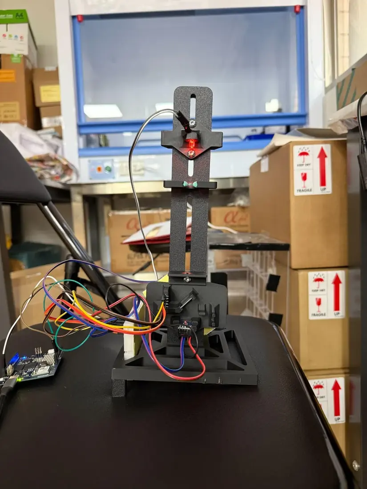
Test 1 · Titanium Dioxide on the Bench
We blanked on clear water this time, then read the growth medium, which read zero, and two titanium dioxide suspensions through the same cell, 1 mL and 2 mL, using titanium dioxide because it scatters light consistently and does not grow or settle the way a culture would. The sample channel dropped from 137.63 lx on the medium to 120.44 lx at 1 mL and 111.62 lx at 2 mL, giving readings of 0.3712 and 0.5785 au. The reference channel sat at 17.23 lx on the medium and 18.33 lx on both samples (notebook, week 19).
| Sample | Sample sensor (lx) | Reference sensor (lx) | OD (au), as logged |
|---|---|---|---|
| Growth medium | 137.63 | 17.23 | 0 |
| 1 mL TiO2 suspension | 120.44 | 18.33 | 0.3712 |
| 2 mL TiO2 suspension | 111.62 | 18.33 | 0.5785 |
OD as the firmware of the time logged it, before the formula of 8.2.
Learn 1
The instrument responds in the right direction and separates the two concentrations, so the tilted geometry holds. Doubling the titanium dioxide moved the reading by a factor of 1.56, which we cannot yet explain from this data alone.
The reference channel is the more important finding. It moved 6.4% between the medium and the samples. The reference beam is split off before the sample, so nothing in the sample should change it; ambient light reaching the sensor is the likely cause.
V4 therefore needs the light path enclosed from the LED to both sensors, so only our own source reaches them, and direct control of the LED.
The next step was to show that the photometer holds up on a culture flowing and growing through the loop. The titanium dioxide data show the optics work, but not that the instrument tracks a live culture.
Test 2 · V4, 434 Hours in the Loop
V4 answered most of that list: snap‑in covers enclose the light path from the LED to both sensors, the components sit at fixed positions, every mount that touches glass is lined with TPU, and an Arduino Uno Q serves both channels on a live dashboard. Still tilted on an angled base, V4 then logged OD600 in line with a B. subtilis 168 culture at 22 °C for 434 hours, from 21 July to 8 August, without drawing a sample (notebook, week 22). The full run, its chart and its data are in 5.1.
Learn 2
The first ~240 hours read as a growth curve (lag, growth, an unexplained dip near 145 h, a plateau near OD 1.5), all without a sample drawn, which a manual sampling routine cannot produce. Later in the run the reference channel failed: it held near 26 lx for ten days, then fell sharply through 1 August, around when the recirculation pump failed and was replaced, and from about 256 h single readings jump by more than 0.3 OD. The Digital Twin’s analysis marks 240–434 h as unreliable, so we read the curve as growth only up to about 240 h. The run also showed where the precision is: noise is tight below about 0.4 OD and ragged above about 0.8 (5.1).
Simplified Photometer (Slim)
4.1 Rationale
Our Pro photometer is costly. The beam splitter, the paralleling lens and the flow cuvette account for most of its cost: US$275 of the US$371.78 in parts (11.1). This led us to look for ways to make our photometer cheaper while keeping it reliable for measuring OD600. Because the flow cuvette is required for our design’s in‑line measurement, we only looked to remove the need for the paralleling lens and the beam splitter.
4.2 Design Changes
The Slim model uses optical fibers to carry two parallel beams of proportional intensity. A parallel path needs no paralleling lens and no beam splitter, which removes the two most expensive components. The fibers are split 1:1 between the sample and reference sensors, instead of the Pro model’s 9:1.
These changes reduced the size of our photometer by more than two‑thirds and its cost by more than US$130.
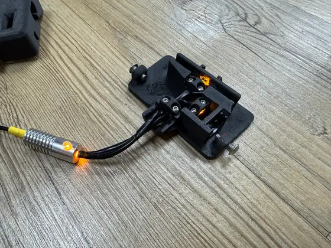
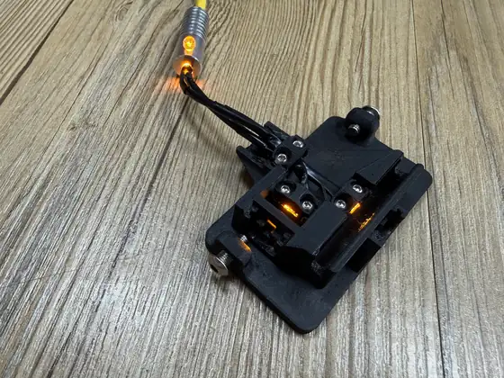
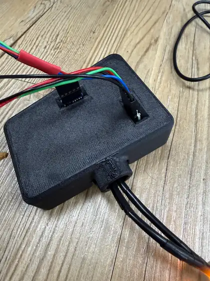
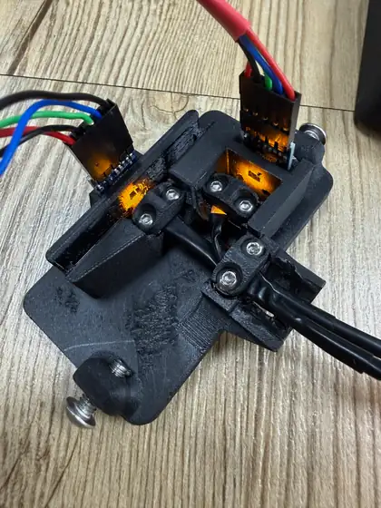
4.3 Comparison with Pro
Both photometers track the BioDrop linearly. The Pro model reads OD600 nearly 1:1 with the benchtop spectrophotometer, so its upper and lower bounds are close to the BioDrop’s. The Slim model matches in linearity but reads a factor of 5 lower, so its sensitivity is ⅕ of the BioDrop’s. Because its reading climbs more slowly, the Slim should read denser suspensions before its sensor saturates: we estimate about five times the BioDrop’s range (5.2.3). It is also cheaper to build (US$235.29 against US$371.78, 11.1).
4.4 CAD Files & Material List
For teams who want to replicate the Slim photometer, its assembly guide (11.3), material list (11.1) and STL files (11.2) are in the Reproduction part of this page, and three classmates outside the team have built it from that guide (6.2).
Results
5.1 Pro In‑Line Photometer V4 and the 22 °C B. subtilis 168 Growth Curve
The Pro photometer logged OD600 in line with a B. subtilis 168 culture at 22 °C for 434 hours without drawing a sample; the first ~240 hours are clean, and after that its reference channel failed.
The Run
We ran wild‑type B. subtilis 168 continuously at 22 °C, drawn from the bioreactor loop and passed through the flow cell in line, so no sampling event interrupted the culture and no material was removed to measure it. The log runs 434 hours, 2,720 rows from 21 July to 8 August (notebook, week 22).
Data: the run’s readings (Google Drive)
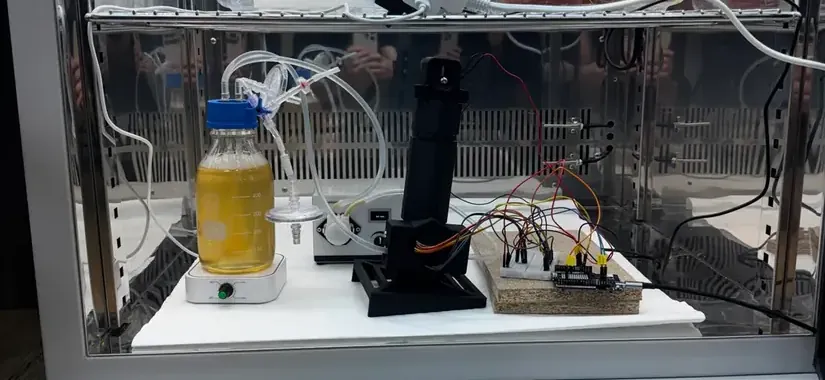
Around 1 August the recirculation pump failed and was replaced the same evening. We first attributed the change to contamination, which was wrong (notebook, week 22).
What the Run Showed
Its first ~240 hours cover lag, growth, an unexplained dip near 145 h and a plateau near OD 1.5, all without a sample drawn, which is the thing a manual sampling routine cannot produce. The run is also where the instrument’s limits became visible.
- Noise is tight below about 0.4 OD and ragged above about 0.8, so the useful precision is not flat across the range.
- The rejection rate is the share of the latest burst’s 14 readings that were rejected. It moved from 42.9% to 14.3% to 0% within one run, so it reflects the most recent burst rather than a running total. The rule behind it, and the two bubble gates added after this run, are set out in 8.1.
- The sample‑to‑reference ratio fell from 7.33× on day 1 to 4.64× by day 10 (8.1) as the culture grew, as it should: the dashboard’s ~9:1 is the blank ratio of clean medium (9.16:1, worked back from the dashboard readings), and the ratio must fall below it as the OD rises (8.2).
The Instrument: V4
The run used V4, built to what cycle 4 asked for (3.4): snap‑in covers enclose the light path from the LED to both sensors, the components sit at fixed positions instead of sliding, and every mount that touches glass is lined with TPU. An Arduino Uno Q reads both sensors and serves a live dashboard on the local network, so both channels could be watched during the run without touching the rig (8.1).
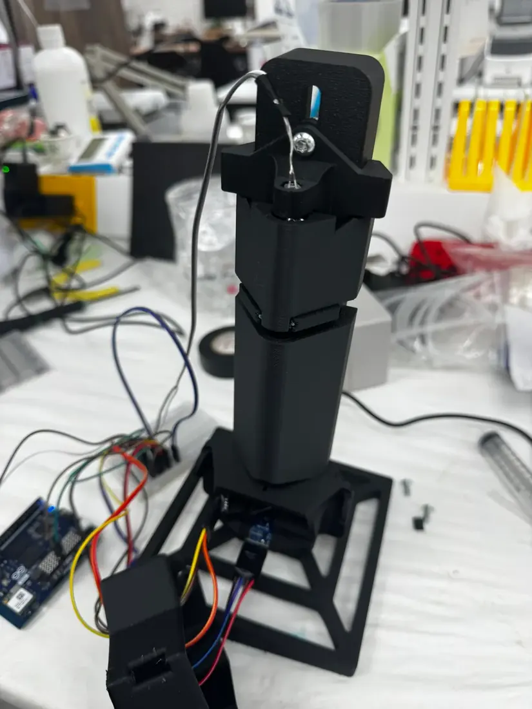
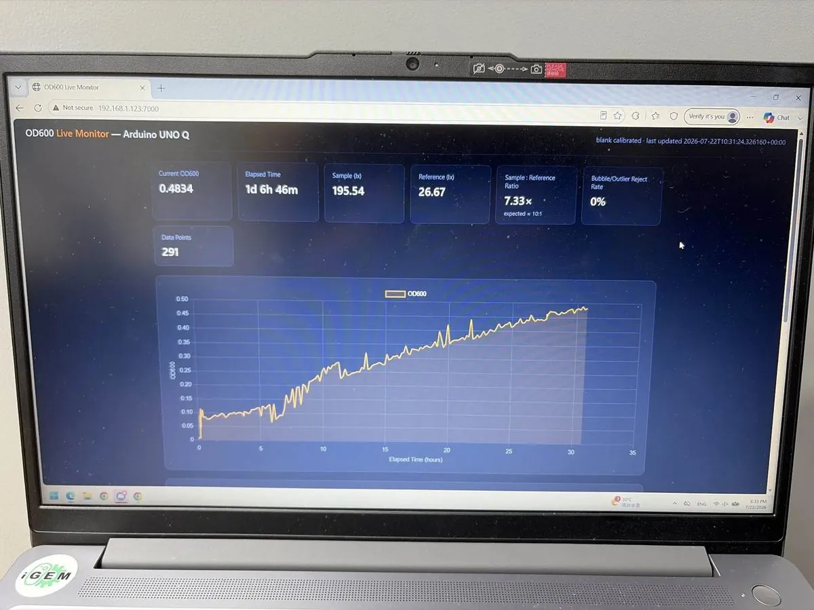
5.2 Calibration
Against the BioDrop, the Pro’s uncalibrated readings agreed to a median under 4% on TiO2; on SiO2 the Pro read with R² = 0.974 and the Slim with R² = 0.992.
5.2.1 Rationale
The photometer’s readings had to be checked against an established instrument. Calibrating with culture would add growth time, settling and batch‑to‑batch variation, so we used inert scattering standards instead: titanium dioxide (TiO2) and silica (SiO2) suspensions, which scatter light consistently and neither grow nor settle quickly. A BioDrop cuvette spectrophotometer was the reference instrument throughout.
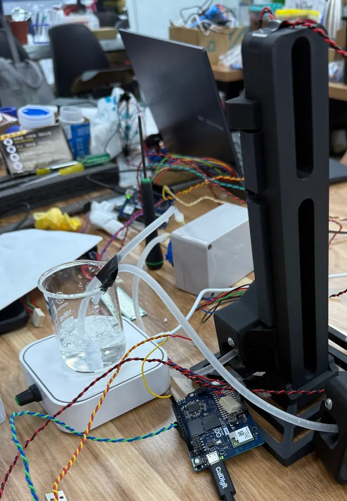
5.2.2 TiO₂ Calibration of the Pro Photometer
We ran known concentrations of TiO2 through a 500 mL solution and used a BioDrop cuvette spectrophotometer as our reference instrument for this calibration assessment.
TiO2 was added 1 mg at a time to 10 mg, then in 5 mg increments to 60 mg, giving a fine series at low concentrations and a coarser one above.
One single‑point exclusion was applied on objective grounds, and is shown as an open marker in the figures. The 5 mg BioDrop reading violates monotonicity: it exceeds the readings both above and below it, which is impossible for an increasing standard.
Plotted against the TiO2 mass added, both instruments track the standard closely across the full range, each regressing against mass at R² > 0.999 (Pro photometer 0.9999, BioDrop 0.9998). The raw, uncalibrated output is linear in true concentration to the same degree as the reference instrument.
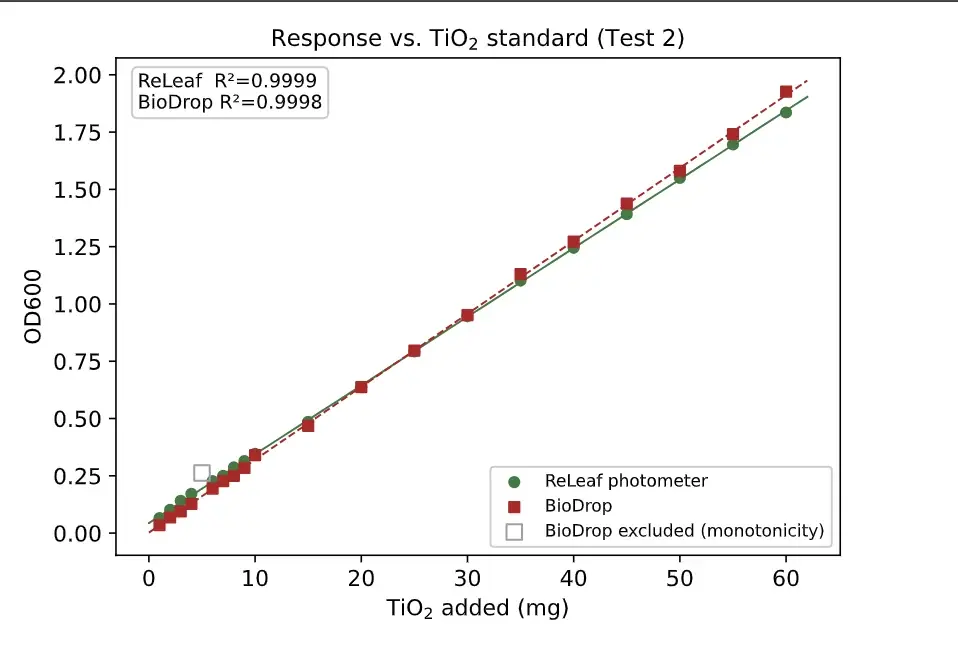
A line fit through the raw Test 2 points has a residual scatter of RMSE = 0.011 OD600 (R² = 0.9997) about that line; this quantifies the tightness of the raw agreement, with no calibration transform applied.
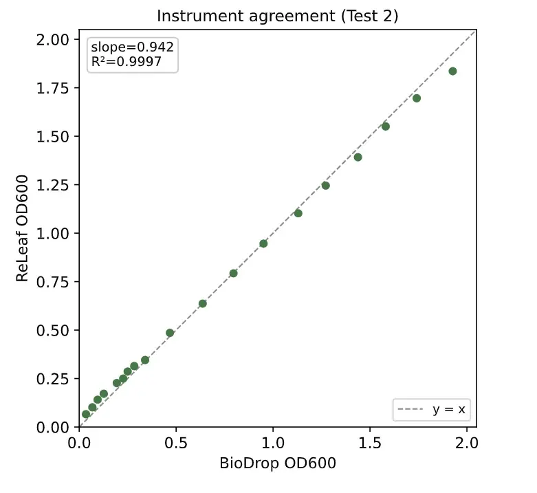
We expected the photometer to need a calibration transform fitted against the BioDrop. On TiO2 the raw, uncorrected output agreed with the BioDrop to a median of 3.8% across both runs, so no transform was applied.
Every Pro reading in this wiki, including the continuous growth curve, is reported from the raw output with no transform. The SiO2 run (5.2.3) then tested both photometers further and showed the limits of that: on silica the Pro reads about 0.12 OD below the BioDrop, and the Slim needs a one‑factor calibration.
The two TiO2 runs in fullthe loop, Test 1, its exclusion
We prepared known concentrations of TiO2 in 500 mL of 1% SDS solution, with a BioDrop cuvette spectrophotometer as the reference instrument, and ran the calibration curve twice. In Test 1 we added TiO2 1 mg at a time for 40 data points, a dense, uniform series that resolves how linear each instrument is. Test 2 is the series above.
The calibration loop consisted of a magnetic stirrer, a peristaltic pump, our photometer, and a 500 mL reservoir. The reservoir cap had holes for the inlet and outlet of the photometer loop, a sampling port, and an air hole that prevented a vacuum from forming during sampling or pressurization when adding TiO2.
In Test 1 the 37 mg BioDrop reading is a handling error, off the trend of its neighbors, and is shown as an open marker instead of being deleted. Its paired photometer reading is on trend, which puts the error in the reference measurement.
Against the TiO2 mass itself, the raw output tracks the standard with a residual scatter equal to the BioDrop’s (Test 1, 2–41 mg: 0.030 OD600 for both).
5.2.3 SiO₂ Calibration of the Pro and Slim Photometers
We ran our SiO2 calibration of the Pro and Slim photometers in sequence, sampling a set amount of the SiO2 solution to test on our benchtop spectrophotometer before adding more, while keeping the total volume of solution in the run the same.
We graphed the Pro, the Slim and the BioDrop on the same graph, all against the mass of SiO2 as our baseline.
Both photometer versions gave a consistent response as the SiO2 concentration increased. The BioDrop readings are more irregular, which we attribute to its 1 µL sample volume: a droplet that small is sensitive to how the particles happen to be distributed in it.
The Slim photometer showed a more linear relationship (R² = 0.992) than the Pro (R² = 0.974). This supports the reliability of our Slim photometer, as the TiO2 run did for the Pro. The difference is likely caused by the design changes we made to place our light closer to our sensors and cuvette; however, that change also meant that our Slim photometer was a completely different structure from the Pro version.
The distance between the light source and the particles differs between the instruments, so light scattered by the particles can still reach our sensor. In the BioDrop’s 1 µL droplet the path is short and scattered light is more likely to be lost, which makes individual readings less repeatable at low concentrations.
To test the true difference in sensitivity between our Pro and Slim photometers, with the BioDrop as our main point of comparison, we narrowed the range of data points on our graph to 1 OD, to stay within the specifications of the BioDrop.
The R² values are 0.9956 for the BioDrop, 0.9874 for the Pro photometer and 0.9947 for the Slim. All three are linear within the range where the instruments overlap.
The Pro photometer’s line runs parallel to the BioDrop’s. When we plot the two against each other, the slope is 1.001: for every 1.00 OD the BioDrop rises, the Pro rises by 1.00 OD as well. The only difference is a constant offset of about 0.12 OD (intercept −0.123), with the Pro reading lower at every point.
That fit uses the eight silica points. Including the blank at 0 mg, where both instruments read zero by definition, gives a slope of 0.93, because the gap opens between the blank and the first silica step, so the Pro under‑reads at the low end where a growth curve starts. Over the whole series, against the dilution‑corrected BioDrop, our notebook’s fits give a slope of 0.995 up to OD600 2.5 and 0.594 above it (notebook, week 32), which is where the working limit of about OD600 2.5 in 7.1 and 7.4 comes from.
The Slim photometer’s readings fall on a straight line against the Pro (R² = 0.993) at about ⅕ the scale, so a factor of 5.57 converts a Slim reading to OD600.
5.2.4 Blank Protocol
The blanking protocol accounts for much of the inaccuracy in our early iterations. The BioDrop is calibrated against distilled water, so a photometer blanked on growth medium reports absorbance relative to a different baseline.
The baseline has changed between builds. V2 was zeroed on growth medium (3.3); the angled stand was blanked on clear water, the BioDrop’s own baseline (3.4); in the loop, a run starts with a blank on the growth medium (8.2). Since 19 July the photometer also accepts a blank entered by hand, because the flow cuvette cannot be cleaned while it is in the loop, and a blank measured through a dirty window had read four times high (notebook, week 20).
A second limit on accuracy comes from concentration, and it applies to the BioDrop rather than to the in‑line photometer. Prof. Chang noted in the June review that absorbance readings lose accuracy above OD600 1 (6.1). From the silica run of 10 October, BioDrop samples above that point were diluted before measurement and the value multiplied back: ×2 for OD 1–2 and ×4 for OD 2 and above (we never exceeded OD 4). The TiO2 runs of August were read undiluted (5.2.2). The dilution is also why the BioDrop’s silica readings become irregular past OD 2, where a small discrepancy is multiplied by four (5.2.3).
5.2.5 Calibration Procedure
Across the TiO2 and SiO2 tests, the Pro photometer tracks the BioDrop linearly, and the Slim model is linear at about ⅕ of the scale.
Adjusting to Feedback
Two outside reviewers changed the photometer. Prof. Chang Jo‑Shu reviewed the bioreactor design on 18 June and 4 September 2026, and Teacher He of Owl Lab reviewed its electronics on 20 and 22 September. The entries below give what each said about the photometer and the change it led to; the rest of both reviews is on the bioreactor page.
6.1 Outside Reviewers
Prof. Chang Jo‑Shu 18 June OD600 measurementAbove an OD600 of 1, a cuvette sample has to be diluted before it reads accurately
AdvisedOnce OD600 exceeds 1, samples must be diluted before accurate readings can be taken.
Why it matteredThe in‑line photometer never opens the loop, so the advice applies to the instrument it is checked against: an undiluted BioDrop reading above OD600 1 makes the comparison least trustworthy exactly where the culture is densest.
ChangedHow we read the reference instrument: from the silica run of 10 October, BioDrop samples above OD600 1 were diluted before measurement and the reading multiplied back (5.2.4; notebook, week 32).
Teacher He, Owl Lab 22 September second reviewOne mainboard for the bioreactor: the photometer rebuilt to plug into it as a module
AdvisedReplace the existing wiring with a single mainboard extending the Arduino UNO Q, on which each pin can be set to a voltage with a jumper, so each sensor becomes a module.
ChangedThe photometer’s connections were redesigned so that it plugs into the mainboard as a module: its soldered board ends in six wires to one port instead of being wired to the controller directly (9.2).
6.2 Outside Builders
To test whether someone outside the team can build a photometer from our guide, we gave three classmates the Slim photometer’s parts and its assembly guide (11.3) and observed the builds on 15 and 16 October 2026. Their backgrounds ranged from an experienced engineer to a student with little engineering background. What they found changed the guide (table below).
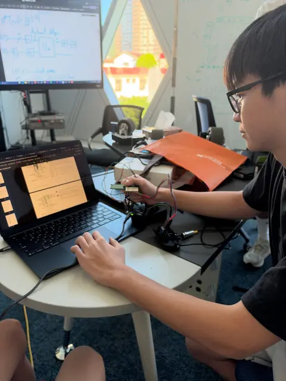
Wentao Zhong
Experienced engineer“The solder‑side diagram is mirrored from the component side. I had to flip the board in my head.”
“It gives a number, but I’d want a check in the guide that tells me it’s reading correctly before I trust it.”
That check is the guide’s Test 4 (Stage 7): after the blank, clean medium must read close to OD600 0.
“If you can’t solder, a pre‑made board option would remove the only hard step.”
“For around $235 against a commercial spectrophotometer, I’d build it.”
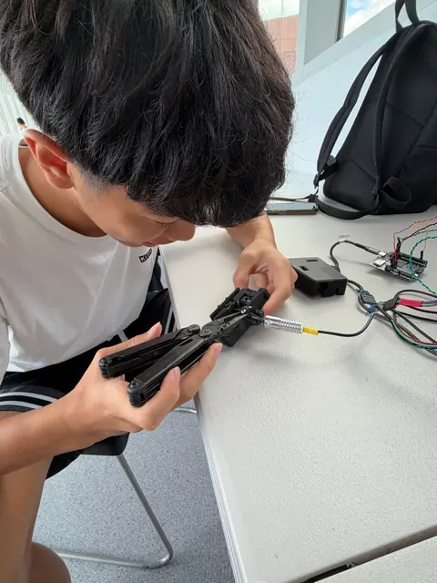
Raphael Tseng
Boy Scout“Stage 6 assumes you know which way the sensor faces. I put it in backwards once.”
“About two hours, most of it on the board.”
“Everything I needed was on the list. I didn’t have to go looking for anything halfway through.”
“The pictures of each printed part made it easy to sort the pieces before starting.”
“The clip took some force to seat, but once it clicked it wasn’t going anywhere.”
“I could see this being built somewhere without a proper lab bench. A table and a soldering iron were enough.”
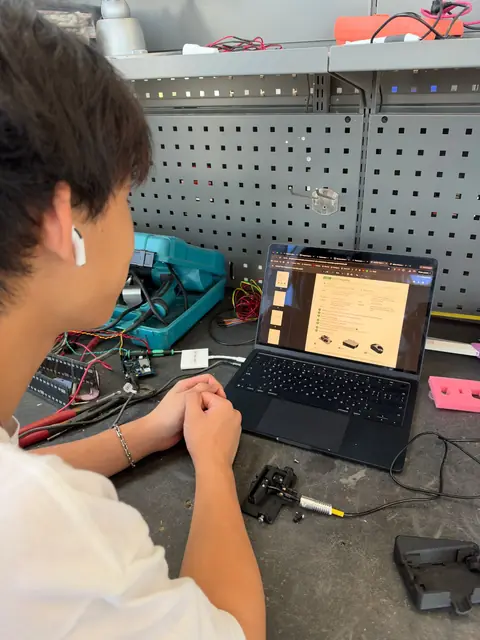
Peter Chen
Little engineering backgroundBuilt everything except the soldered board, which was done for him.
“Soldering was where I needed help. I’d never held an iron before, so that’s the one step I couldn’t do on my own.”
“I’d never built electronics before. Everything up to the board I could do just by following the pictures.”
“Once the board was done, I plugged everything in by following the guide, and a number came up in the app. I built the rest myself.”
“The color‑coded wiring made it hard to plug things into the wrong place.”
What we changed in the guide
| What happened | Who | Change |
|---|---|---|
| The solder‑side pictures are the mirror image of the component side | Wentao | Stage 4: the turn‑over step now says that left and right are swapped in every solder‑side picture (Pro and Slim guides) |
| A sensor went into its slot backwards | Raphael | Stage 6: a check of each sensor’s direction before it is pressed in (Slim guide) |
| The board could not be soldered without experience | Peter, Wentao | Stage 4: a note that the PCB is the guide’s hardest soldering and needs basic experience; practice first, or do it with someone who has (Pro and Slim guides) |
Three builders is a small test, and it covered the Slim only. The Pro guide shares the Slim’s soldering stages, so the two Stage 4 changes are in both guides. Quotes are condensed from what each volunteer told us, with their permission.
Final Designs & Specifications
After developing and validating both versions, we ended with two photometer designs suited to different priorities. The Pro photometer prioritizes long‑term stability and continuous monitoring, while the Slim photometer prioritizes lower cost, smaller size and easier reproduction.
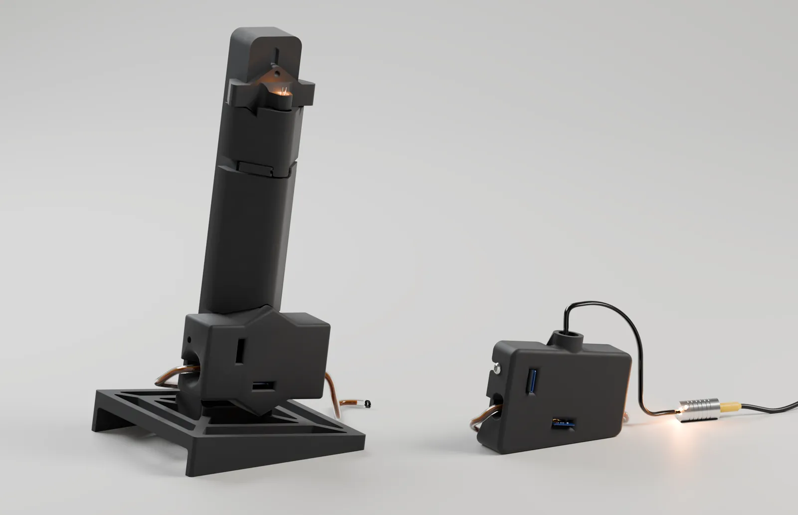
263 mm 127 mm 129 mm 72 mm 34 mm 99 mmPro photometer263 mm tall, footprint 129 × 127 mmSlim photometer72 mm tall, footprint 99 × 34 mm
7.1 Which One to Use
| Property | Pro | Slim |
|---|---|---|
| Best for | Long bioreactor runs | Low cost and small size: teaching, replicate vessels, a second instrument |
| How the light is split | Paralleling lens and a 90:10 beam splitter | Two optical fibers, 1:1 |
| Reference channel | 10% of the beam, to its own sensor | One fiber of the two, through an identical window |
| Printed parts | 8 | 5 |
| Reads OD600 | Directly, up to about OD 2.5 | With a ×5.57 scale factor |
| Finest step (SiO2) | 0.21 mg | 0.49 mg |
| Linearity | Accurate at low OD; reads low above about OD 2.5 | Linear across the full range (R² 0.992) |
| Longest run | 434 hours logged; the first ~240 clean | Not yet run long‑term |
| Cost | US$371.78 in parts (11.1) | US$235.29, 36.71% less: no US$100 lens or US$40 beam splitter (11.1) |
- Use the Pro for a bioreactor run.
- Its reference beam normalizes every reading against the LED’s own output, which is what stops a slow drift in the light from being recorded as growth over hundreds of hours.
- Use the Slim where cost and size decide.
- The Slim costs 36.71% less than the Pro. It is far smaller, has fewer parts to build, and stays linear at high density. It needs its scale factor applied.
Finest step: the smallest change in silica each photometer resolves on the 10 October series, its point‑to‑point noise divided by how far its reading moves per milligram.
7.2 Pro Photometer
The Pro reads OD600 in line, inside the bioreactor loop, and normalizes every reading against a reference beam. It is the photometer in the bioreactor today.
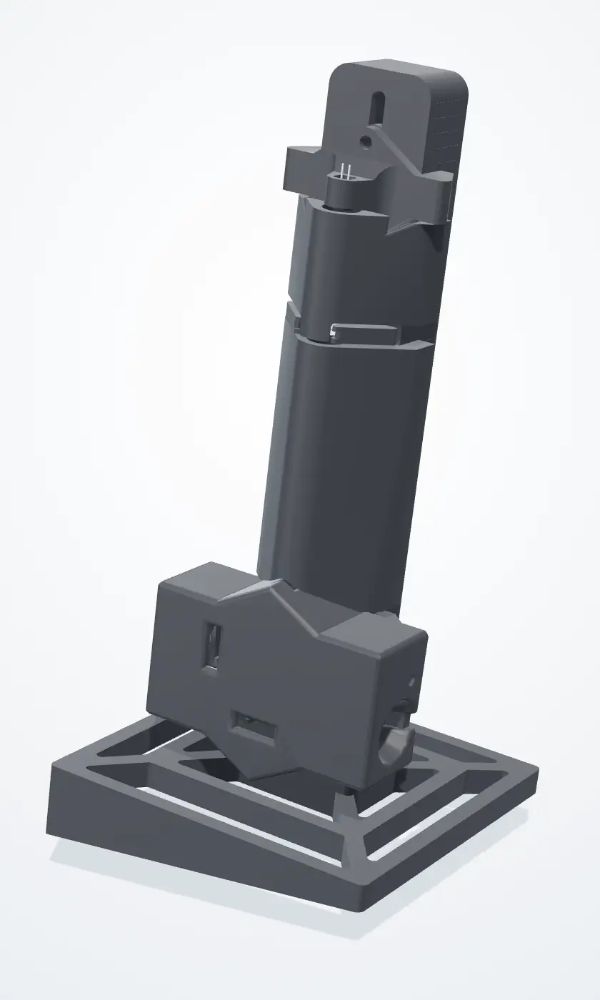
7.2.1 Specifications
- Wavelength
- 600 nm (amber LED)
- Light path
- LED → paralleling lens → 2 mm slit → 90:10 beam splitter → flow cuvette → sample sensor
- Reference
- 10% of the beam, split off at 90°, to a second sensor
- Sensors
- Two GY‑302 lux sensors on one I²C bus
- Flow cuvette
- 2 mm path; readings scaled ×5 to the standard 10 mm
- Controller
- Arduino Uno Q; runs with no computer attached
- Output
- OD600 from the sample‑to‑reference ratio, about every 10 minutes
- Mounting
- Tilted 7.5° on its base
- Body
- PLA, with TPU‑lined slots for the optics and sensors; snap‑on covers
How a reading is filteredbursts, the median, two gates
Each reading is a burst of 16 lux readings, the first 2 dropped while the LED settles. The 14 left are cut at their median ± 3·MAD, and then two bubble gates check the burst against itself and against the recent past. The method and its test on silica are in 8.1.
The 14 partsnumbered as in the model
Printed parts 1–8
- 1LED mountHolds the 600 nm LED.
- 2Lens holderHolds the paralleling lens, for a parallel beam.
- 3BodyThe column every part attaches to; sets the light-travel distance.
- 4Sensor frameHolds the beam splitter and both sensors.
- 5BaseAngles the column 7.5° so bubbles clear.
- 6Body coverBlocks outside light along the light path.
- 7Body cover, smallBlocks outside light along the light path.
- 8Sensor frame coverBlocks outside light from the sensors.
Bought-in parts 9–14
- 9600 nm LEDThe light source.
- 10Paralleling lensMakes the beam parallel.
- 11Beam splitter, 90:10Sends 90% on through the cuvette and 10% to the reference.
- 12Flow cuvetteCarries the culture across the beam (2 mm path).
- 13Sample sensor (GY-302)Reads the light after the culture.
- 14Reference sensor (GY-302)Reads the light straight from the LED.
7.2.2 Optical Layout
- LED housing 38 mm
- Light-travel region 117 mm
- Sensor region 62 mm
Light from the 600 nm LED is made parallel by the lens and narrowed by a 2 mm slit, then split 90:10. The sample sensor sees the light after the culture; the reference sensor sees the LED alone. As the LED ages and dims, both sensors see the change, so OD600 is taken from their ratio and the drift cancels out.
Why 600 nm?three reasons
- It is the standard. OD600 is how bacterial density is reported, so the readings compare directly with the BioDrop and with published growth curves.
- It measures cells, not chemistry. At 600 nm a culture dims the beam mainly by scattering light off the cells; proteins and DNA absorb in the UV, and most of the medium’s color in the blue.
- It leaves the optogenetic switch alone. CcaS/CcaR responds to green (~535 nm) and red (~670 nm). Amber sits between the two peaks, so the photometer’s own light does not switch production on or off.
7.2.3 Mechanical Design
| Requirement | How the final design meets it |
|---|---|
| No bubbles in the reading | The column is tilted 7.5°: in the team’s observation, almost all bubbles left the cuvette within about a quarter of a second. Lying flat or standing upright, bubbles were trapped. |
| No stray light | The light path and both sensors sit in a closed dark chamber. |
| Tight, repeatable fit | PLA body with TPU‑lined slots: the lining grips the lens, splitter and sensors firmly without cracking them, and the readings are steadier over long runs. |
| Accurate prints | Base and body are printed apart and join at a diagonal insert, so neither needs heavy supports. |
| Easy to service | The covers snap onto a groove along the body and lift off to realign the light path or replace a sensor. |
7.3 Slim Photometer
The Slim carries the light in two optical fibers instead of through a lens and a beam splitter. That removes the long light‑travel column, so the whole instrument is 72 mm tall, with five printed parts.
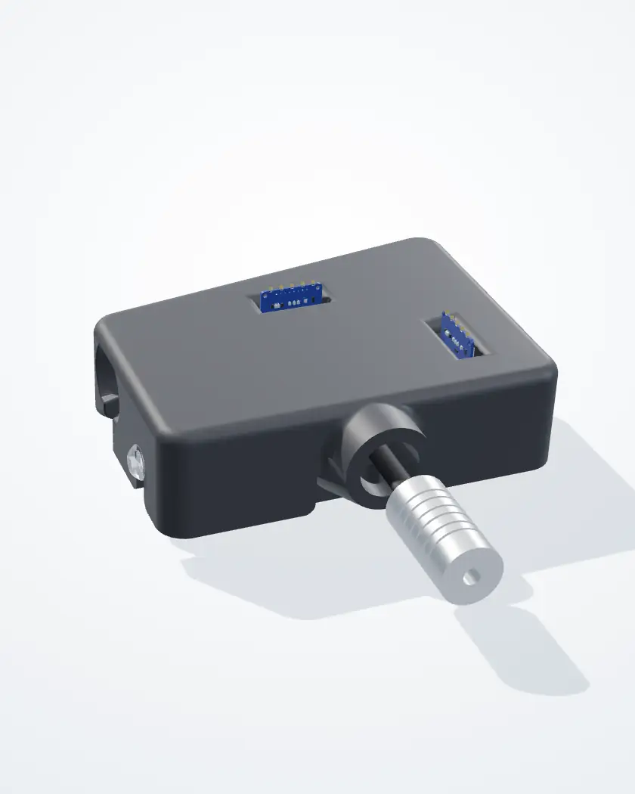
7.3.1 Specifications
- Wavelength
- 600 nm (the same amber LED as the Pro), in a fiber illuminator
- Light path
- LED → two optical fibers, split 1:1 → sample fiber → flow cuvette → sample sensor
- Reference
- The second fiber → an empty chamber of the same shape → reference sensor
- Sensors
- Two GY‑302 lux sensors
- Flow cuvette
- The same flow cell as the Pro
- Size
- 72 mm tall; footprint 99 × 34 mm
- Printed parts
- 5: body, case and three fiber clips
- Linearity
- R² 0.992 against SiO2, full range (5.2.3)
- Scale
- ×5.57 to read OD600 (5.2.3)
- Mounting
- The case’s 10° wedge is its foot
The 11 partsnumbered as in the model
Printed parts 1–5
- 1BodyBase plate and optical bench: the cuvette channel, sensor slots and windows.
- 2CaseThe lid over the bench; its 10° wedge is the foot.
- 3Front clipClamps both fibers where they come in.
- 4Sample clipHolds the sample fiber’s tip 1 mm from the cuvette.
- 5Reference clipHolds the reference fiber’s tip at the empty chamber.
Bought-in parts 6–11
- 6Fiber illuminatorAluminum housing with the 600 nm LED; feeds both fibers.
- 7Optical fibers ×2Carry the light to the sample and reference paths.
- 8Flow cuvetteCarries the culture across the sample beam.
- 9Sample sensor (GY-302)Reads the light after the culture.
- 10Reference sensor (GY-302)Reads the light from the reference fiber.
- 11Screws6 × M3 × 8 hold the clips; 2 × M4 × 12 hold the case.
7.3.2 Optical Layout
The reference side copies the sample side’s shape, so the two sensors see the same LED through the same geometry, and the only difference between them is the culture. The sample‑to‑reference ratio cancels LED drift, as in the Pro, with the fiber split doing the beam splitter’s job.
7.3.3 Mechanical Design
| Requirement | How the final design meets it |
|---|---|
| Fewer parts | Fibers replace the lens, the beam splitter and the 117 mm light‑travel column. |
| Fiber tips held square | Each tip is clamped under a screwed clip, square to its window. |
| Matched paths | The reference chamber is a copy of the sample side, so only the culture differs. |
| No stray light | The case closes over the bench; only the sensor headers come up through it. |
| No bubbles in the reading | The case’s 10° wedge is the foot, tilting the bench as the Pro’s 7.5° base does. |
| Easy to service | Two M4 screws hold the case; the clips come off with an Allen key. |
7.4 One Limit for Both
The ×5.57 factor and the working limit of about OD 2.5 come from a single run on one scattering standard (silica). Cells scatter differently: they are larger and softer, and they change shape as they grow. On culture, both are therefore approximate.
Software
8.1 Data Acquisition and Filtering
-
Take a burst of 14 readings
For each measurement the LED switches on and the sensor takes 16 lux readings in a short burst. The first two are discarded while the LED settles, leaving 14. If a bubble drifts through the light path during the burst, only one or two readings may jump.
-
Find the median
Instead of averaging the burst, the firmware uses the median. An average is dragged toward whichever side a stray reading falls; one or two extreme readings barely move the median, so it gives a bubble‑resistant estimate of the true signal.
-
Measure the spread
The firmware calculates the median absolute deviation (MAD), which describes how far the readings typically fall from the median.
-
Reject outliers
Readings beyond median ± 3·MAD are rejected before OD600 is calculated. The rejection percentage, the share of the latest burst’s 14 readings rejected, is reported live, and values above 50% trigger an alarm for excessive bubble interference.

Testing the filter on silica (10 October)
On 10 October we ran both photometers in series on the same loop for 4.5 hours, on 1 µm silica microspheres in suspension, across 40 concentrations in 2.5 mg steps (the series in 5.2.3). For every reading we logged eight different estimators computed from the same 14 readings, to see which would match the BioDrop most closely.
In clean flow, the estimator barely matters. Across the 40 concentrations the eight never disagreed with each other by more than 0.004 OD, which is smaller than the scatter during calibration.
Under bubbles, one-sided estimators fail. Five of the eight (MAD, Qn, biweight, mean and median) are symmetric: they treat an unusually bright reading and an unusually dark one alike. The other three (upper, p75 and p90) keep only the bright end of the burst. We had been running “upper” on the instrument, on the assumption that a bubble can only block light. In a turbid culture it does the opposite: the air replaces liquid full of particles, so more light reaches the detector. Under bubble conditions the five symmetric estimators stayed within 0.02 OD of each other on the Pro photometer and within 0.006 OD on the Slim photometer, while the three one‑sided ones moved together, away from the rest. The one‑sided estimators did better on the Pro and worse on the Slim, so the direction a bubble pushes is not the same on both. We kept the symmetric MAD filter.
No estimator rescues a reading taken through air. A bubble can pass partway through a burst, spoiling a few of the 14 readings, or fill the cell for several seconds, so every reading in the burst is taken through air. Those readings agree with each other perfectly and are all wrong. The MAD filter caught 94% of the first kind and none of the second. In one instance the Pro photometer reported 0.79 OD for 6 minutes while the actual value was 3.18, and the software flagged every one of those readings as good. Instead of looking for a better estimator, we added two gates that run after it:
Gate 1: the burst against itself
The same 14 readings are computed twice, once with the MAD filter and once with an upper‑percentile estimator. If the two differ by more than 0.03 OD, the reading is rejected. The upper estimator is not trusted for the OD itself; it is used because the two agree to within a few thousandths of an OD in clean flow and pull apart when a bubble passes. On the 10 October run this flagged 97% of disturbed readings and rejected none of the clean ones.
Gate 2: the reading against the recent past
A reading more than 0.05 OD or 5% away from the last accepted value is held back, and the new level is accepted only once 3 consecutive readings agree with it. This catches air slugs. At the long run’s cadence of about one reading every 10 minutes, 3 readings span 30 minutes, and a culture growing at 22 °C does not move 0.05 OD in that time. In run 6, at 37 °C on B. subtilis WB800, the windows came about every 2.3 minutes (1,083 in 41.8 h), so 3 readings span about 7 minutes; growing at 0.286 h−1, the culture moved about 1% per window, under the 5% step. The price is a few minutes’ delay and some lost points; the gain is a growth curve that stays reliable over days and weeks.
Finally, if the rejection rate exceeds 50% of the latest burst’s readings, the dashboard shows it in red and tells the user there are excessive bubbles to fix in the bioreactor, so a long‑lasting air slug cannot leave the record wrong indefinitely.
Data: Google Drive
8.2 OD600 Calculation
Each sensor reports illuminance in lux. The sample sensor measures light transmitted through the culture, while the reference sensor measures light diverted before the sample. Using the ratio between these two signals helps normalize readings against changes in LED output.
At the start of a run, we first take a blank measurement on the growth medium and calculate K, the ratio of the sample and reference readings when no bacteria are present:
During the run, each filtered sample and reference reading is then converted to OD600 using:
S is the sample‑sensor reading and R is the reference‑sensor reading, both in lux. The 5 is 10 mm ÷ 2 mm: it scales the absorbance across the 2 mm cuvette to the standard 1 cm path, so the result reads as OD600. On the Pro, K is about 9:1, the splitter’s ratio; as the culture grows, the live ratio falls below it (5.1).
8.3 Code
The photometer runs one app on its Arduino Uno Q, built in Arduino App Lab. The board’s microcontroller only reads the two sensors; the board’s Linux side turns those readings into OD600, keeps the blank and serves a dashboard to any browser, so no computer has to stay plugged in. It is the photometer part of our integrated bioreactor app, taken out on its own, with the same wiring (9).
For the Uno Q in Arduino App Lab: the sketch, the Python back end, the web dashboard and an offline replay tool.
Set it up
- In App Lab, create a new app and copy in
app.yaml,sketch/,python/andassets/index.html. - Add the Brick WebUI – HTML and the sketch library Arduino_RouterBridge.
- Run it. The console should report the sample sensor at
0x5Cand the reference at0x23asok.
Use it
- Choose the light path: beam splitter for the Pro (enter 9 : 1), fiber for the Slim.
- Align: the LED stays on; bring both readings up without reaching 100%.
- Blank: fill the flow cuvette with clean medium and calibrate the blank.
- Record. Each run saves its OD600 to a CSV and every raw reading to a second file.
- Blank again whenever the light path has been moved.
What is in the appfour parts
- Sketch
sketch/sketch.ino, on the microcontroller: four dark readings, then the LED on and 16 lit readings from each sensor, sent raw.- Back end
python/, on the board’s Linux side: OD600 by eight estimators side by side, with 8.1’s median ± 3·MAD gate one of them, the blank, bubble rejection and the CSV log.- Dashboard
assets/index.html: live OD600, all eight curves, and the alignment, blank and recording controls.- Replay
tools/replay.py: reruns the eight estimators on a recorded raw file, on any computer with Python 3.8 or later.
Version 1.2.0 moves the OD600 calculation from the microcontroller to the Linux side.
The downloadable v1.2.0 (10 October) defaults to the one‑sided “upper” estimator and predates
the two bubble gates of 8.1; to run the MAD filter this page describes, set
"default_algorithm" to "mad" in python/constants.json.
Electronics and Firmware
9.1 Control Architecture
Neither of our finalized photometer versions uses a breadboard; both use a soldered perfboard connected to an Arduino Uno Q. The Arduino Uno Q is a small computer in itself, so we can run the code just by giving it a power source, with no computer constantly plugged into it. This moves us one step closer to a cheap and accessible bioreactor, and also removes one of the other failure points of our photometer’s sensing (a computer–Arduino cable coming unplugged).
Our Arduino has a limited number of ground ports, so we link all of the ground wires of our sensors, LED and transistor together.
The transistor is a more complex part. It lets us give the LED a completely different voltage from the sensors, and lets us turn the LED on and off without affecting the sensors while they run. We want this because, as we scale up our bioreactor, the voltage we give our LED may need to increase as well, and it is much safer and more sustainable for our bioreactor if the LED is not kept on continuously.
The transistor has three parts: the collector, the base and the emitter. The LED’s ground wire connects to the collector side of our transistor; the Arduino’s D3 port connects to the base after passing through a 1.2 kΩ resistor; and the base also passes through a 10 kΩ resistor before joining the output of the emitter side, and all of these finally combine with the sensor ground wires into one Arduino ground port.
Because we have a sample sensor and a reference sensor, we connect both of their SDA and SCL ports together and connect them to the same Arduino ports. Wiring them this way lets us control several sensors from the same Arduino microcontroller at the same time.
The power our Arduino supplies is different for our sensors and for our LED. Our LED currently takes a 5 V input through a 330 Ω series resistor, which may need to increase in future work once we scale up our bioreactor, while our sensors need a 3.3 V input to run smoothly. The two lux sensors can therefore share a power input, while the LED’s stays separate.
After all of the wiring on the perfboard, we are left with six wire outputs: SCL, SDA, D3, 3.3 V, 5 V and ground, which makes the last step of setting up the photometer extremely simple.
9.2 The Soldered Board
The circuit of 9.1 is soldered on a 2 × 8 cm perfboard, with a 330 Ω resistor in series with the LED. Six right‑angle 2510 headers take the cables: three to the Arduino, one to each lux sensor and one to the LED.
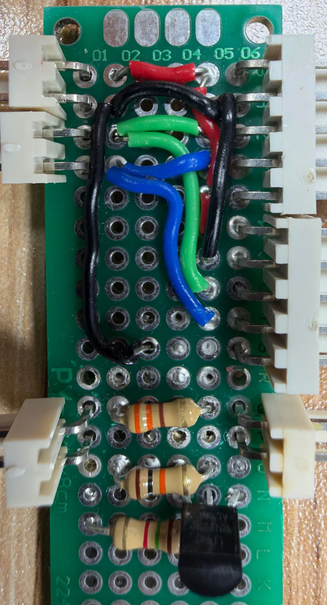
Future Use
10.1 Future Use
Our photometer can help any student or professor measure the optical density of their solution at 600 nm during growth runs. It removes the reliance on sampling, and with it the human error that sampling brings. They come at US$371.78 in parts for the Pro model and US$235.29 for the Slim model (11.1), which drops the US$100 paralleling lens and the US$40 beam splitter. The BioDrop we calibrated against cost NT$15,000, about US$470, so the Slim is roughly half the price of the benchtop instrument and the Pro sits a little below it. The saving is real, but it is not the main point: what a benchtop cannot do at any price is sit in the loop and read without a sample being drawn.
For anyone who needs a photometer that measures optical density at 600 nm in the future, our design lowers the barrier to entry to the cost of its parts and a 3D printer, and makes an in‑line photometer openly accessible.
We hope that future uses of, and developments to, this design will benefit many others running their own experiments.
Reproduction
11.1 Materials List
The material lists of both photometers, with costs in US dollars. The pictures are the parts’ own CAD models.
| Component | Specification | Unit Cost (USD) | Total Cost (USD) |
|---|---|---|---|
| LED | 1x 600nm | 0.2 | 0.2 |
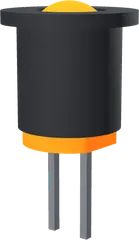 LED Clip | 1x black LED clip, holds the LED in the LED mount | — | — |
| Paralleling Lens | 1x SIGMAKOKI Plano Convex Lens (Synthetic Fused Silica) φ12.7mm Focal Length 40mm SLSQ-12.7-40P | 100 | 100 |
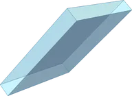 Beamsplitter | 1x Coaxial Light Beamsplitter 12.0 × 12.0 × 14.5 mm, 45 degree angle, 90% through with 10% reflection | 40 | 40 |
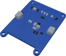 Lux Sensor | 2x GY-302 BH1750FVI Lux Sensor Chip Light Intensity Light Module | 2 | 4 |
| Resistors | 1x 330 Ohm 1x 1200 Ohm 1x 10000 Ohm | 1 | 3 |
| Microcontroller | 1x Arduino Uno Q | 70 | 70 |
| PCB | 2x8cm | 1 | 1 |
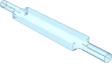 Flow Cuvette | 2mm inner diameter, 4mm outer diameter, total length 76mm. | 135 | 135 |
| Wires | 3x 12in+1in 20AWG black wires 3x 12in+1in 20AWG red wires 2x 12in+1in 20AWG green wires 2x 12in+1in 20AWG blue wires 1x 24in 20AWG red wire 1x 24in 20AWG black wire | 0.1 | 1.2 |
| Heat Shrink | 2x 2.0x45mm heat shrink tube | 0.1 | 0.2 |
| Transistor | 1x UTC PN2222 transistor | 2 | 1 |
| 2510 Connectors | 2x 5pin 2510 female connector 4x 2pin 2510 female connector 2x 5pin 2510 male connector 4x 2pin 2510 male connector 18x 2510 terminal crimp pin | 0.1 | 3 |
| DuPont Connections | 10x Female DuPont crimp pin 2x 5pin Female DuPont crimp pin housing | 0.1 | 2 |
| Male Header Pins | 10x Bent Male header pins (all connected together) | 0.1 | 1 |
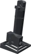 Filament | 362.97g Black PLA and 43.77g Black TPU 95A | PLA: 22.99/kg TPU: 41.99/kg | 8.34 1.84 |
| Total Sum Cost | 371.78 | ||
| Component | Specification | Unit Cost (USD) | Total Cost (USD) |
|---|---|---|---|
| Fiber Optic Light | 1x 600nm PMMA | 10 | 10 |
| Lux Sensor | 2x GY-302 BH1750FVI Lux Sensor Chip Light Intensity Light Module | 2 | 4 |
| Resistors | 1x 330 Ohm 1x 1200 Ohm 1x 10000 Ohm | 1 | 3 |
| Microcontroller | 1x Arduino Uno Q | 70 | 70 |
| PCB | 2x8cm | 1 | 1 |
| Flow Cuvette | 2mm inner diameter, 4mm outer diameter, total length 76mm. | 135 | 135 |
| Wires | 3x 12in+1in 20AWG black wires 3x 12in+1in 20AWG red wires 2x 12in+1in 20AWG green wires 2x 12in+1in 20AWG blue wires 1x 24in 20AWG red wire 1x 24in 20AWG black wire | 0.1 | 1.2 |
| Heat Shrink | 2x 2.0x45mm heat shrink tube | 0.1 | 0.2 |
| Transistor | 1x UTC PN2222 transistor | 2 | 1 |
| 2510 Connectors | 2x 5pin 2510 female connector 4x 2pin 2510 female connector 2x 5pin 2510 male connector 4x 2pin 2510 male connector 18x 2510 terminal crimp pin | 0.1 | 3 |
| DuPont Connections | 10x Female DuPont crimp pin 2x 5pin Female DuPont crimp pin housing | 0.1 | 2 |
| Male Header Pins | 10x Bent Male header pins (all connected together) | 0.1 | 1 |
| Filament | 124.11g Black PLA and 24.78g Black TPU 95A | PLA: 22.99/kg TPU: 41.99/kg | 2.85 1.04 |
| Total Sum Cost | 235.29 | ||
Both lists are copied as the team wrote them. In two rows the unit and total costs do not multiply out (the transistor and the DuPont connections); a dash marks a part with no recorded price, which is not in the total; and the Slim’s six M3 and two M4 screws (7.3) are not on its list.
11.2 Design Files
The printed parts of both photometers, numbered as in their 3D models (7.2, 7.3). Each STL downloads under a descriptive name.
The Pro’s eight STLsone per printed part
- 1LED mount
Holds the 600 nm LED.
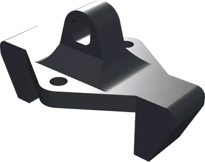
- 2Lens holder
Holds the paralleling lens, for a parallel beam.
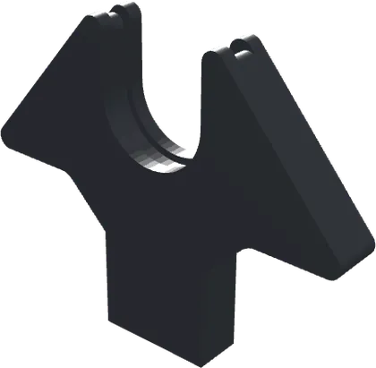
- 3Body
The column every part attaches to; sets the light‑travel distance.
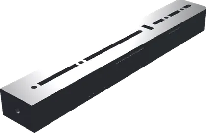
- 4Sensor frame
Holds the beam splitter and both sensors.
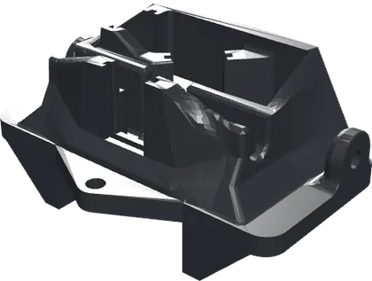
- 5Base
Angles the column 7.5° so bubbles clear.
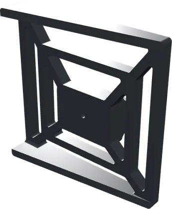
- 6Body cover
Blocks outside light along the light path.
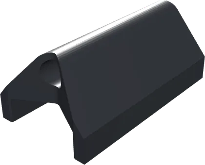
- 7Body cover, small
Blocks outside light along the light path.
- 8Sensor frame cover
Blocks outside light from the sensors.
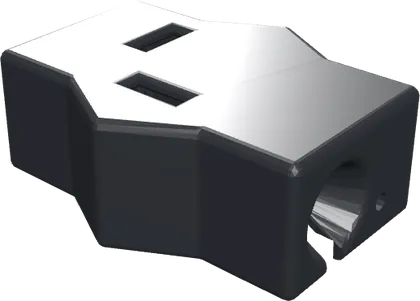
The Slim’s three STLsits clip is printed three times
- 1Body
Base plate and optical bench: the cuvette channel, sensor slots and windows.
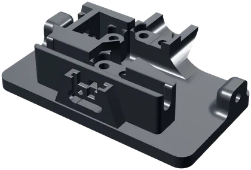
- 2Case
The lid over the bench; its 10° wedge is the foot.
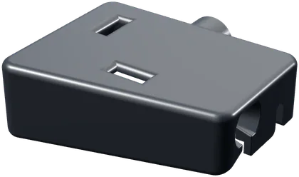
- 3–5Clips, three of one part
The front clip clamps both fibers where they come in; the sample and reference clips hold each fiber’s tip.
11.3 Assembly Guides
Print, wire, assemble, align and blank, stage by stage, with the parts list and a check after each stage.
The same stages for the Slim (part 4): print, make the illuminator cable, wire and test the sensors, assemble the body and align, with its parts list.
Three classmates outside the team built the Slim from this guide, and the guide was changed where they got stuck (6.2).
Safe use. In the loop, the flow cell carries live B. subtilis culture: handle it, and anything that drips from it, as the bioreactor’s culture, under its containment rules (bioreactor, part 8) and the loop’s clean‑in‑place sterilization (bioreactor, integrated prototype 3). The flow cuvette cannot be cleaned while it is in the loop (5.2.4). The electronics run at 5 V and 3.3 V (9.1).